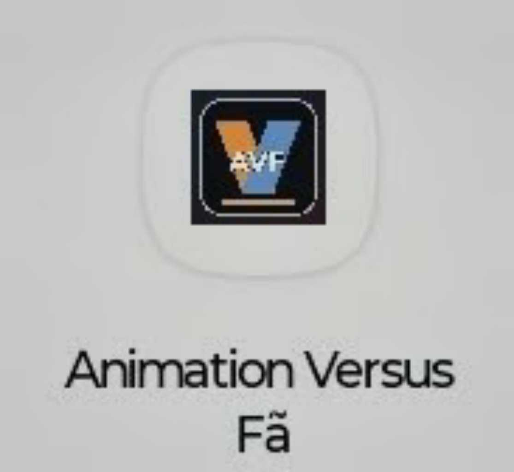

R Radical Mobile

Ação · luta · arena
Animation Versus Fã.
Baixe o jogo ou abra a versão mais recente no navegador.
Escolha como quer jogar
Download AndroidArquivo APK · pacote 2.17.1
Versão atualJogue no navegador · 2.26.1
Aviso: jogo desenvolvido por fã e não oficial. O APK é um aplicativo WebView que abre o jogo pela internet; o pacote Android continua na versão 2.17.1 e a versão atualizada do jogo abre no botão de navegador acima.
Tem PC? Você também pode jogar.
Não precisa baixar um instalador de computador. Abra a versão atual direto no navegador do PC e use o teclado.
JOGAR NO PC PELO NAVEGADORMovimentoA / D ou ← / →
PularW, ↑ ou Espaço
Ataque e defesaJ ataca · K defende
Golpes especiaisL, R e T
Radical Mobile · Página de download do jogo.